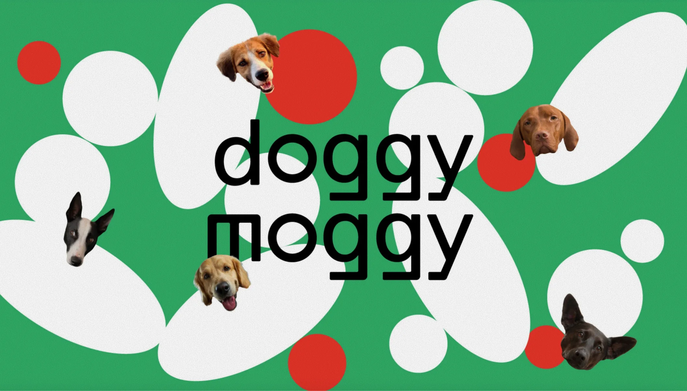
Описание
Айдентика для Doggy Moggy — проекта
о культуре взаимодействия человека и собаки
О проекте
Doggy Moggy — это сообщество современных собачников, объединённых гуманным отношением к питомцам и общими ценностями. Проект объединяет три направления: образовательные мероприятия для владельцев, регулярные городские прогулки с игровыми и необычными форматами и совместные выезды на природу и хайкинг. Через эти форматы Doggy Moggy создаёт пространство для общения, новых знакомств и совместного опыта — с собаками и единомышленниками
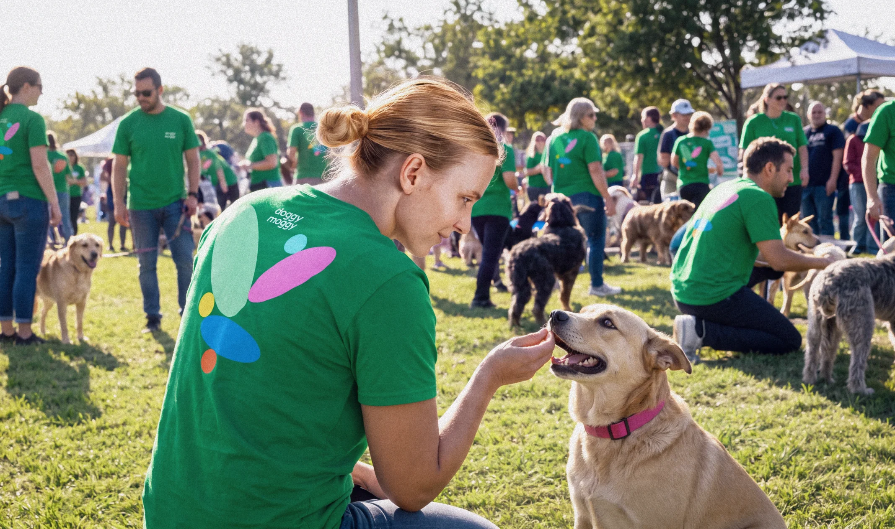
Контекст и задача
В этой среде многие сообщества существуют скорее как разрозненные инициативы: без цельного визуального языка, регулярной коммуникации и узнаваемого бренда. Это создаёт возможность не только объединить разные форматы, но и задать им современный, цельный и привлекательный визуальный образ
Задача — превратить бренд в узнаваемую среду для этой аудитории, адаптировав его визуальный язык под образовательные события, городские прогулки, выезды на природу, соцсети и мерч
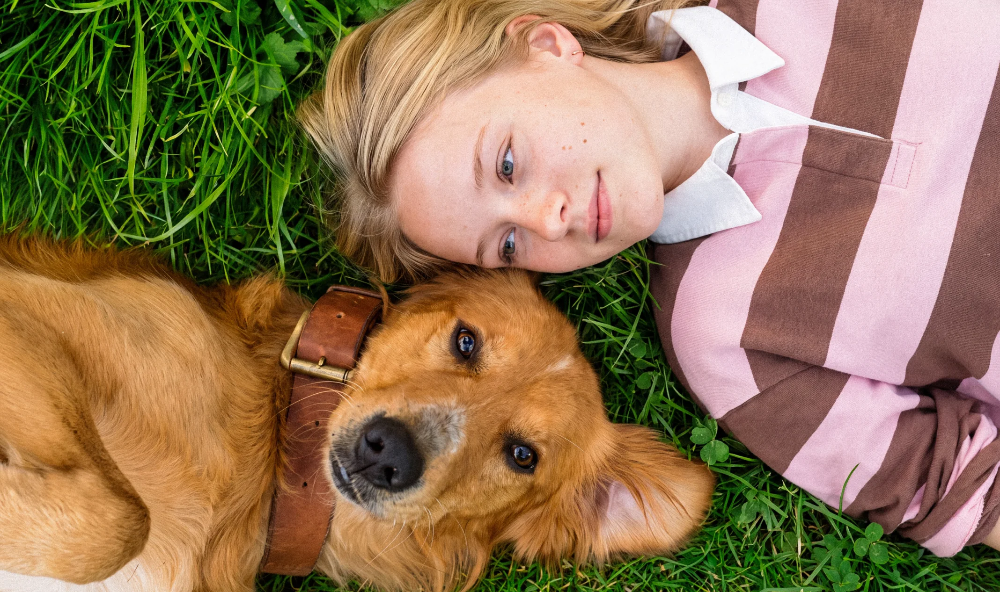
Исследование
Исследование рынка Нью-Йорка и окрестностей показало, что предложение для собачников сильно раздроблено: образованием занимаются тренерские школы, прогулками и хайкингом — отдельные Meetup-группы и локальные организации. Совместить все три направления в одном сообществе не удаётся никому из найденных организаций. Большинство групп ориентированы на породу, район или формат встречи, а не на общие ценности владельцев
Именно здесь определяется место для Doggy Moggy: не просто обучать или организовывать прогулки, а формировать постоянное сообщество, где обучение, городская жизнь и совместное исследование природы объединены гуманным подходом к собакам
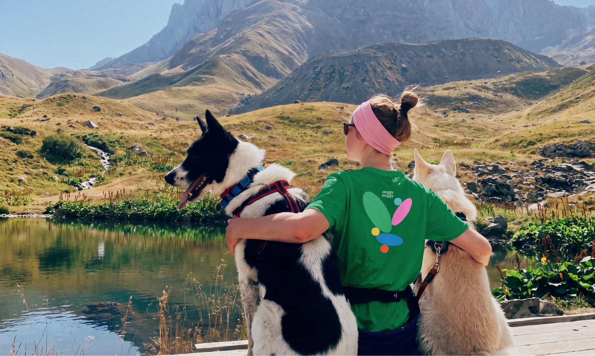
Концепция
В основе визуальной концепции идея мира глазами собаки, где привычные вещи становятся поводом для игры, исследования и взаимодействия. Формы собачьих игрушек — округлые силуэты, рельефы, шипы — превращаются в графический конструктор бренда, а яркие цвета и тактильные элементы создают ощущение движения и энергии
Так Doggy Moggy приобретает собственный характер: немного хаотичный, любопытный, непосредственный и живой — пространство, где собака не адаптируется под человека, а становится центром совместного опыта
Лого и графические элементы
Я переосмыслила формы собачьих игрушек и перевела их динамику и игривость в графический язык: упростила силуэты, оставила характерные рельефы и силуэты, и собрала из них гибкую систему элементов
Яркая, тёплая и открытая палитра отсылает к детскому восприятию, а округлый логотип поддерживает этот характер — четыре буквы q создают ассоциацию с четырьмя лапами собак
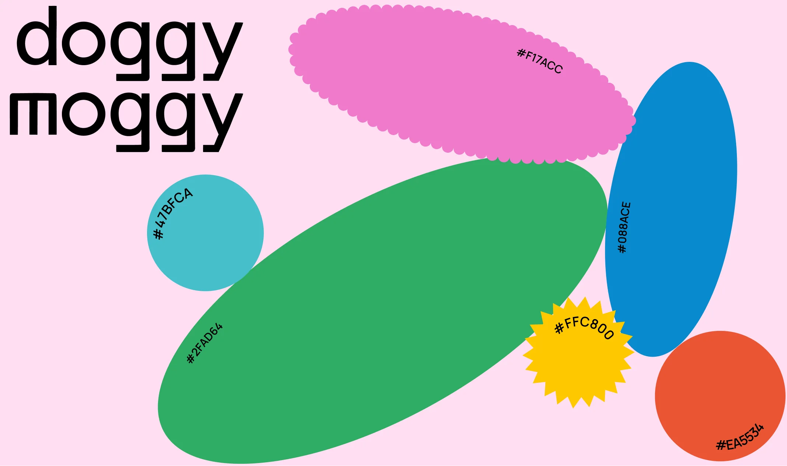
Логотип активно взаимодействует с простой и яркой графикой, превращая носитель в продолжение визуального языка Doggy Moggy
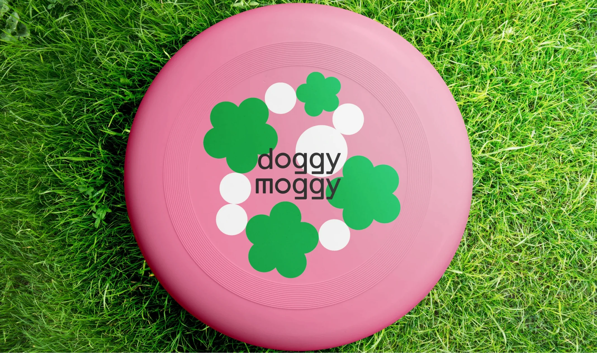
Помимо простых ярких силуэтов, в дополнение графики появляются диалоговые баблы — разнообразные по форме, от округлых до более колючих и динамичных. Они могут работать как линейная графика или как цельные силуэты, а при наложении друг на друга создают визуальное ощущение диалога и взаимодействия.
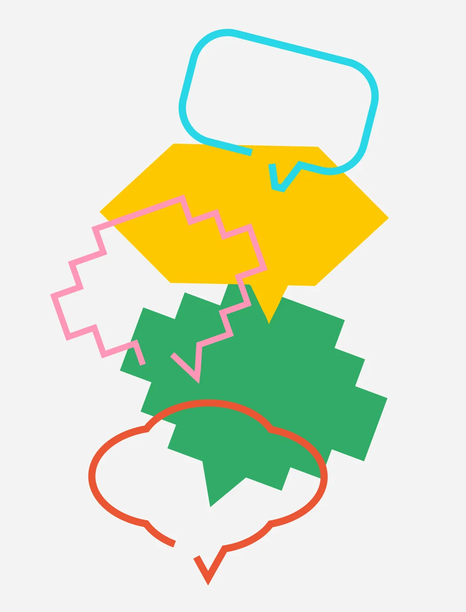
Носители
На носителях графика собирается в живые композиции: собаки и их мордочки становятся самостоятельными персонажами. Простые формы усложняются за счёт игры с планами: буквы могут прятаться за изображениями или, наоборот, выходить на передний план
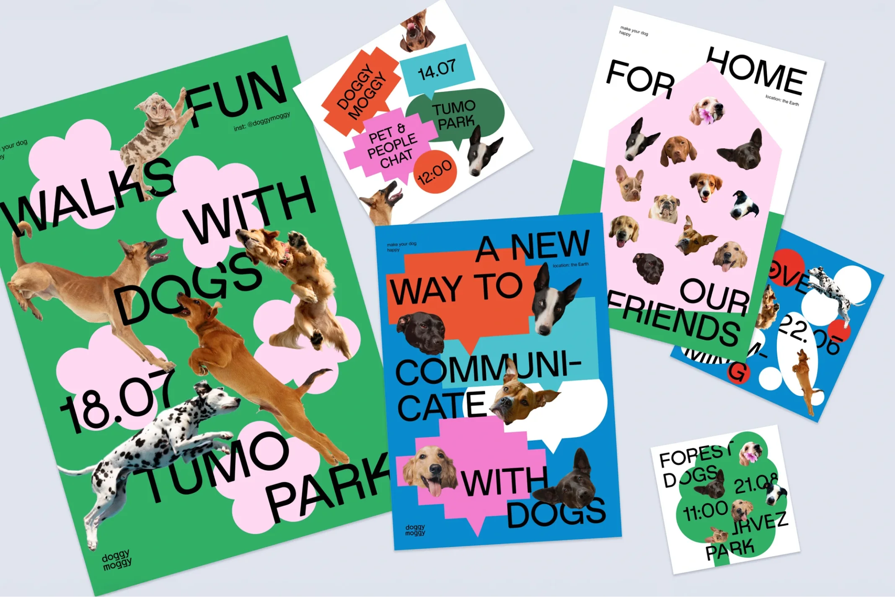
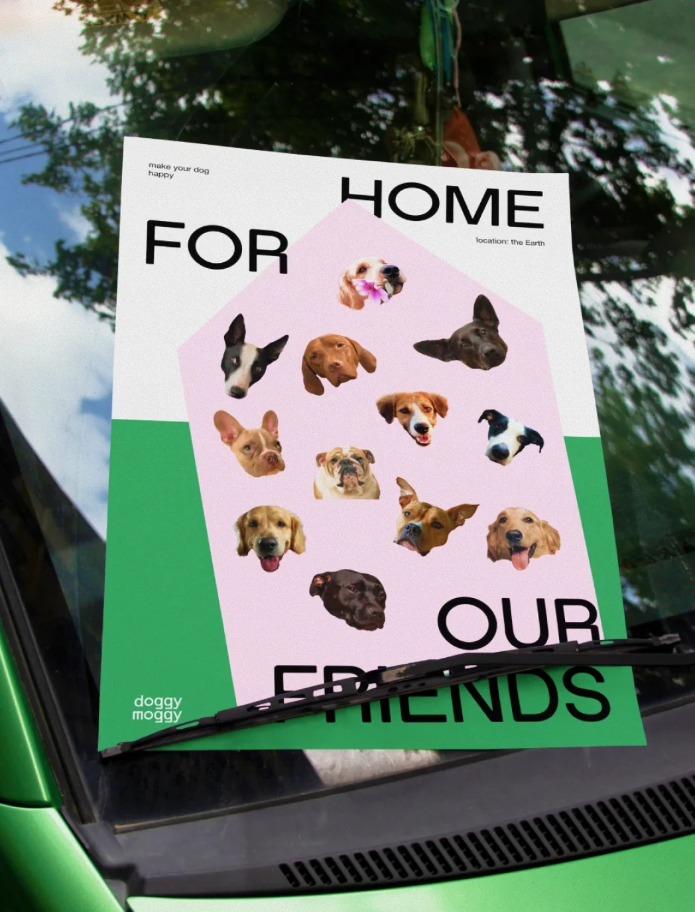
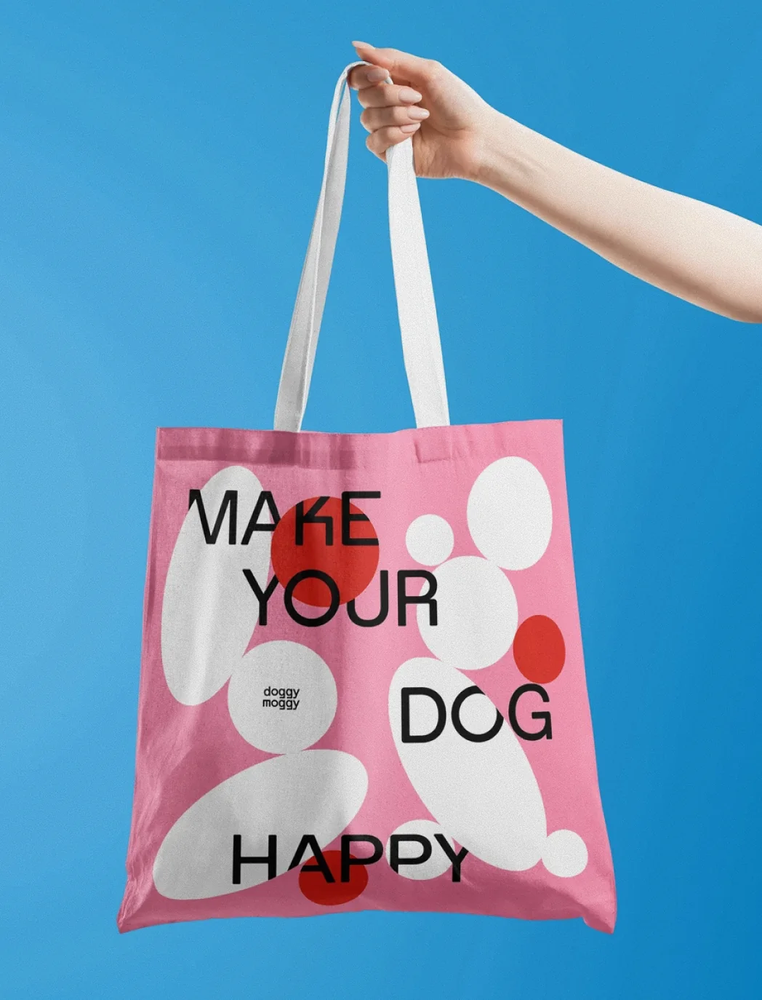
В социальных сетях вся визуальная система собирается воедино: яркие фотографии счастливых питомцев становятся основой контента, а фирменная графика помогает выстраивать композицию и задавать её характер. В одних форматах она работает деликатно — через отдельные линейные баблы, в других становится главным визуальным слоем.
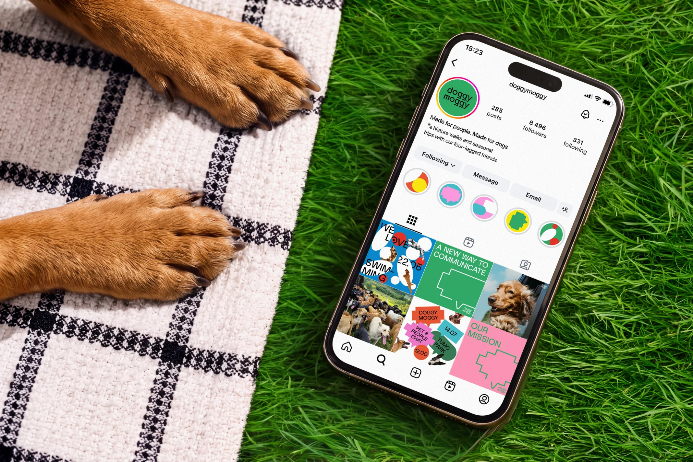
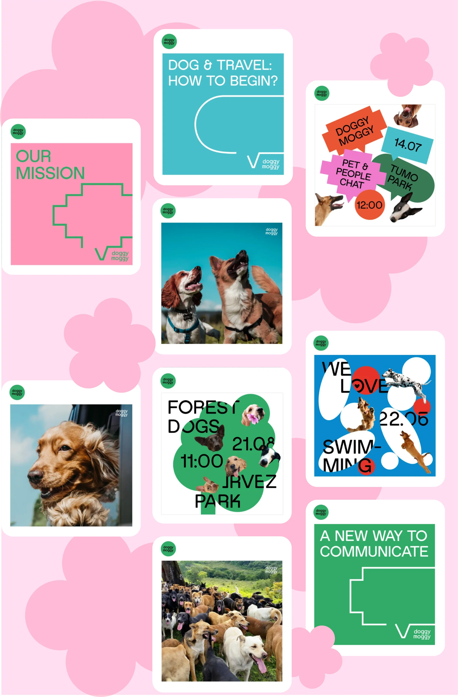
Мерч переносит фирменный язык Doggy Moggy в повседневную жизнь: банданы, поводки и именные адресники для собак дополняются футболками с узнаваемой графикой бренда. Вместе они превращаются в единую визуальную форму, которая объединяет питомцев и владельцев и делает сообщество заметным в городской среде.
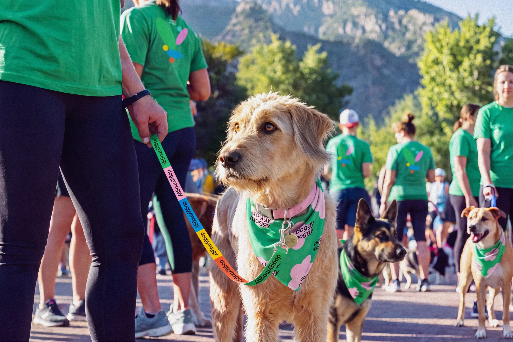
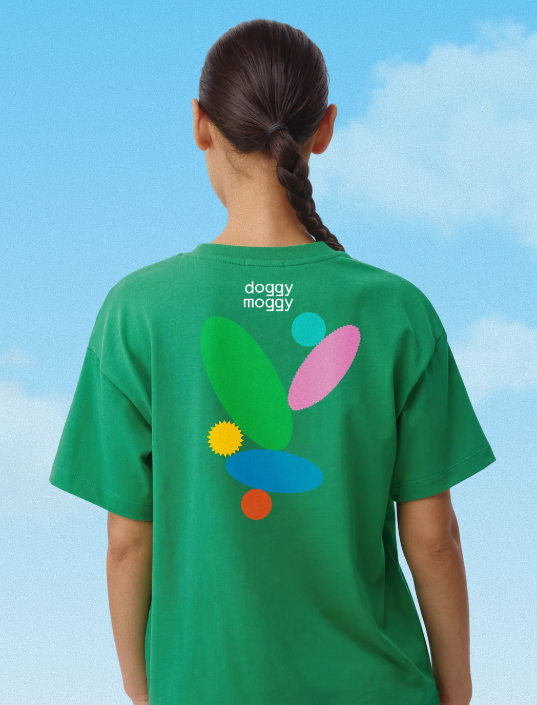
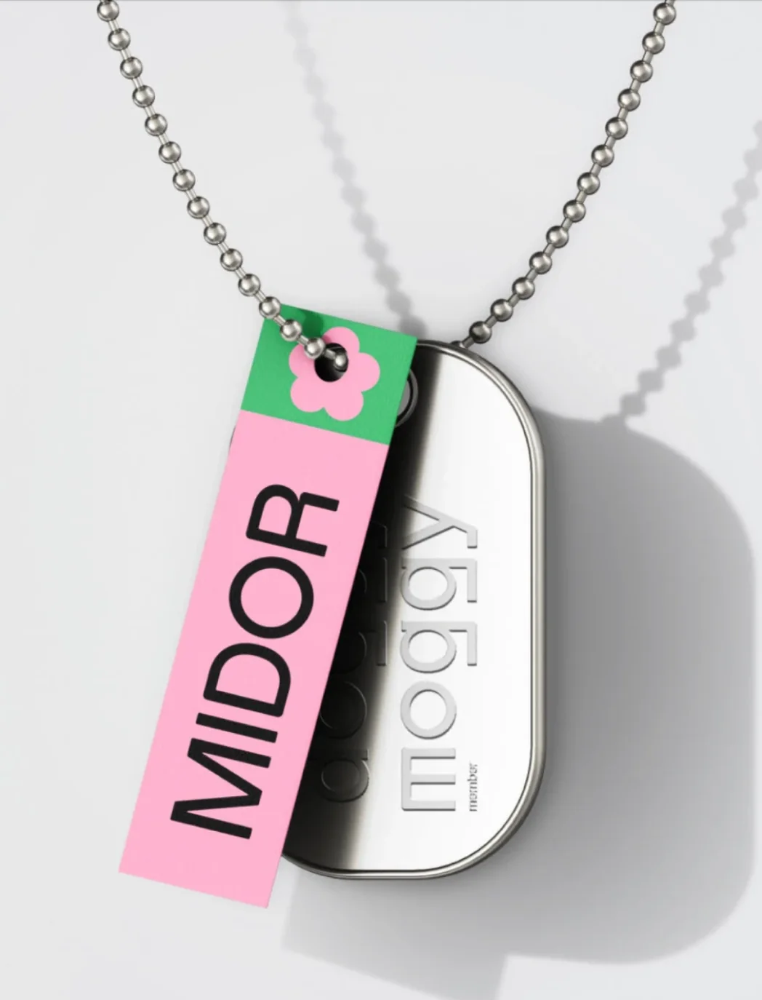
Кредитсы
Концепт и дизайн
Арина Серова